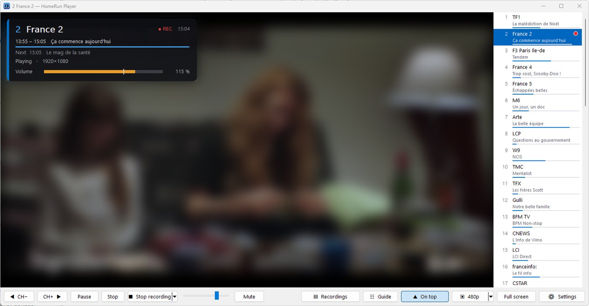
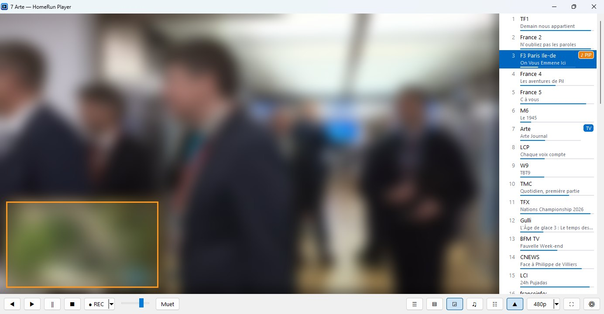
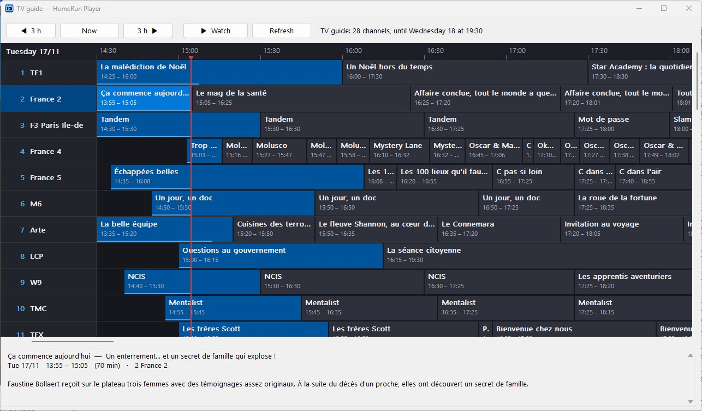
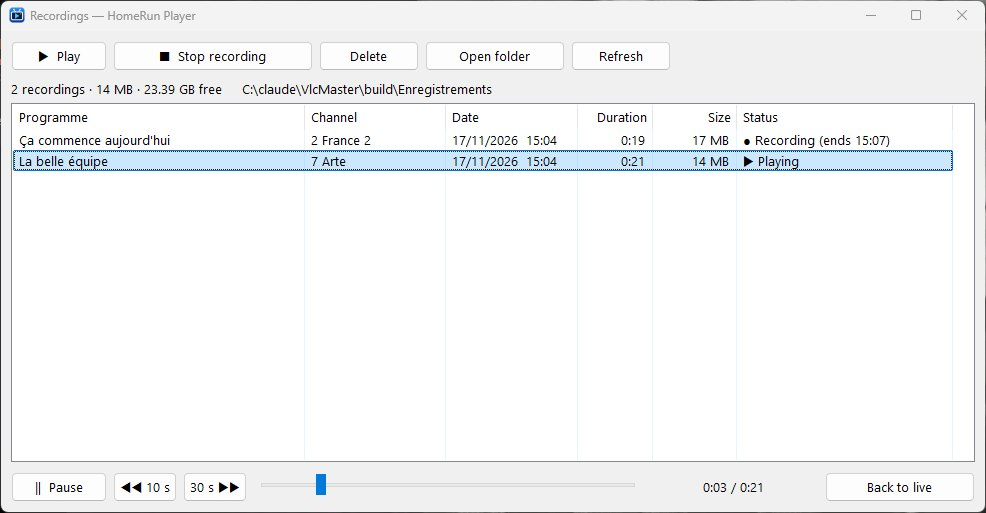
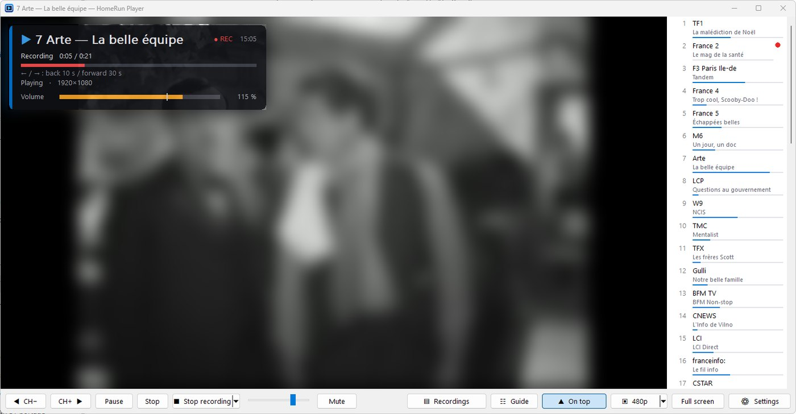
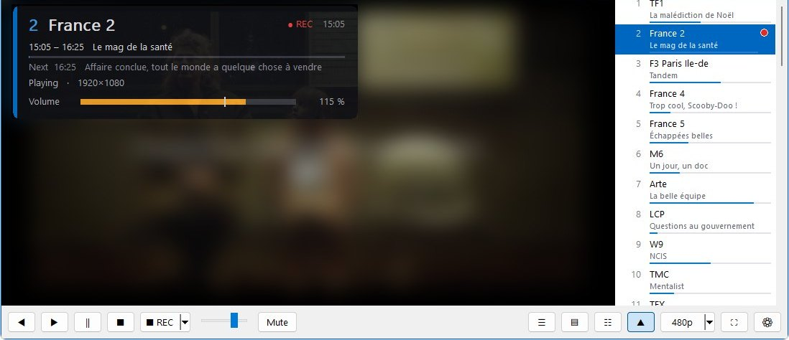
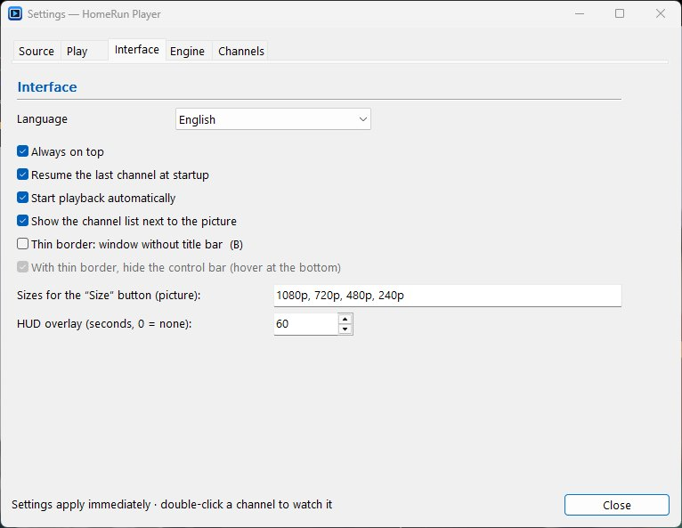
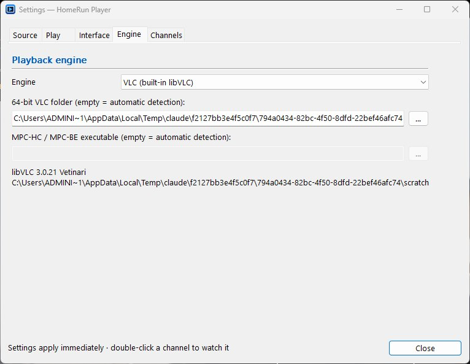

HomeRun Player
A light TV player for HDHomeRun tuners, for Windows, Linux, macOS and Android: live TV in its own window, a TV guide, one-click recording, an on-screen display, a thin-border mode, and a choice of VLC, MPC-HC or MPC-BE to play the picture.
You need an HDHomeRun tuner (or any M3U playlist of TV streams). On Windows, also VLC 3.x 64-bit, or MPC-HC / MPC-BE 64-bit if you prefer them; the program is a single file of about 500 KB. The Linux package installs VLC's libraries itself, and the macOS and Android versions include VLC. How to install each version.















TV pictures are blurred on this page; in the program they are of course sharp.
Features
- Live TV in the window: the picture is drawn inside the application, with hardware decoding. Channels are read
automatically from your tuner's
lineup.m3u(names and numbers); zapping is instant with ← →, the mouse wheel or by typing the channel number. - IPTV playlists (http or https): when a playlist sorts its channels into groups (
group-title, such as countries), a menu above the channel list shows one group at a time, and links to YouTube, Dailymotion or Twitch pages, which VLC usually cannot play, are hidden. - TV guide (automatic with an HDHomeRun, about a day ahead): a time grid window, the programme now on air under each channel with a progress bar, and the current and next programme in the on-screen display.
- Recording: ● Record saves the channel until the end of the programme (from the guide, plus
a margin), or for 30 min, 1, 2 or 3 hours, or without limit. The tuner's stream is saved as is (
.ts, no quality loss). Record one channel while watching another, or several channels at once (one tuner each). - Scheduled recordings from the TV guide: right-click a programme (or press R) to schedule it; it is framed in red in the guide and listed in the recordings window. HomeRun Player must stay open (it can be minimised) and the computer switched on at recording time.
- Time-shift pause (option): pause live TV and pick it up where you left off. A counter shows how far behind live you are; press D or click it to go back to live. Up to 30 minutes.
- Recordings window: programme, channel, date, duration, size and status; play back in the main window with a position bar, pause, back 10 s and forward 30 s, back to live; delete to the Recycle Bin.
- On-screen display (HUD): channel, programme, time, state and resolution, volume, ● REC; shown when you zap or change the volume, or with I.
- Window modes: full screen, a thin-border window without title bar, preset picture sizes (1080p, 720p, 480p, 240p or your own), always on top or normal; the control bar adapts to small windows.
- Tuner tools: model, number of tuners and firmware version of your HDHomeRun, with a warning when a firmware update is available; Scan for channels runs the tuner's channel scan with a progress bar and reloads the list.
- Update notice: when a new version of HomeRun Player is published, a banner at the top of the window offers to download it (can be turned off).
- Languages and subtitles: choose the audio track of the channel (French, original version, audio description, other languages) and the subtitles (including for the hard of hearing) from the ♫ Language button; your choice is remembered and applied again on every channel that offers the same track.
- Picture-in-picture: a second channel from the tuner in an inset, in the corner of your choice. Click a picture to hear it (the inset gets an orange frame when it has the sound); zapping, channel numbers and the list act on the picture you hear; double-click the inset to swap the two channels. The channel list marks the main channel (TV) and the PiP channel. Uses a second tuner (VLC engine).
- Choice of playback engine: VLC (built in through libVLC, fastest zapping), or MPC-HC / MPC-BE, embedded in the window with their own video settings.
- Six languages: English, French, Spanish, German, Italian and Portuguese.
- Settings in a compact tabbed window, applied immediately: playlist, cache, hardware decoding, deinterlacing, aspect ratio, audio delay; rename, hide and reorder channels.
- Automatic reconnection if the stream drops, per-monitor high DPI, a single portable program with its settings in an
.inifile next to it.
Download and install
Every button downloads the file for that system from the latest release.
All four versions talk to the same HDHomeRun: at first start, enter your tuner's playlist address
(http://<tuner IP>/lineup.m3u) in ⚙ Settings.
The Windows version is the reference and the one described on this page. The Linux, macOS and Android versions are new (3.8): they have the same functions — guide, recording, languages, picture-in-picture, tuner tools, updates — but their own keyboard shortcuts (press F1 or ? on Linux, see the Television menu on macOS).
Windows
- Install VLC 3.x 64-bit if you do not have it (or MPC-HC / MPC-BE 64-bit). No VLC on the PC? HomeRun Player says so and shows a Download VLC (free) button that opens VideoLAN's download page; once VLC is installed, just come back to HomeRun Player — it is detected automatically, no restart needed.
- Download
HomeRunPlayer-vX.Y-win64.zipfrom the latest release and unzip it anywhere, for example in your Documents. - Double-click
HomeRunPlayer.exe. VLC is found automatically; with a portable VLC, set its folder in ⚙ Settings › Engine.
Each release lists the SHA-256 checksum of HomeRunPlayer.exe. Settings are saved in HomeRunPlayer.ini next to the
program (or in %APPDATA%\HomeRunPlayer if that folder is read-only).
Linux
For Debian 13, Ubuntu 24.04, Linux Mint 22 or newer (GTK 4.14 or later), 64-bit PC.
- Download
HomeRunPlayer-X.Y-linux-amd64.debwith the Linux button. - Install it from a terminal in your Downloads folder — this also installs VLC's libraries if needed:
sudo apt install ./HomeRunPlayer-*-linux-amd64.deb
(or double-click the file to open it in your software centre). - Start HomeRun Player from the applications menu.
Other distributions: take HomeRunPlayer-X.Y-linux-x86_64.tar.gz from the release page, install GTK 4, libVLC and
libcurl (Fedora: gtk4 vlc-libs libcurl with RPM Fusion; Arch: gtk4 vlc curl), then:
tar xzf HomeRunPlayer-*-linux-x86_64.tar.gz ./HomeRunPlayer-*-linux-x86_64/install.sh
It installs in ~/.local (no administrator rights needed). Settings are in ~/.config/homerun-player/,
recordings in ~/Videos/HomeRun. Remove it with sudo apt remove homerun-player.
macOS
macOS 11 Big Sur or later, Apple Silicon and Intel Macs (one universal app). VLC is built in.
- Download
HomeRunPlayer-X.Y-macos.dmgwith the macOS button and open it. - Drag HomeRun Player onto the Applications folder.
- The app is not signed by Apple, so macOS blocks it the first time:
- macOS 15 Sequoia and later: try to open it once, then go to System Settings › Privacy & Security and click Open Anyway;
- macOS 14 and earlier: right-click (or Control-click) the app in Applications › Open › Open.
xattr -dr com.apple.quarantine "/Applications/HomeRun Player.app" - Allow access to the local network when macOS asks: it is needed to reach the tuner.
Recordings go to ~/Movies/HomeRun Player. Scheduled recordings only start while the app is open, as on Windows.
Android (phone, tablet, Android TV)
Android 5.0 or later. VLC is built in; the remote control's arrows and OK button work on Android TV.
- On the device, download
HomeRunPlayer-X.Y-android.apkwith the Android button. - Open the file (from the notification or the Downloads app). Android asks to allow installing apps from this source (your browser or file manager): allow it, go back and tap Install.
- Open HomeRun Player, then ⚙ Settings to enter the tuner's playlist address.
Android TV has no web browser to download with: install an app such as Downloader from the Play Store and give it
the address of the .apk (right-click the Android button on a computer › copy link), or copy the file with a USB key and a file
manager. From a computer with the Android tools: adb install HomeRunPlayer-*-android.apk.
Updates install over the previous version and keep your settings. Recordings are stored in the app's own folder
(Android/data/fr.popov.homerun/files/Movies) and are deleted if you uninstall it.
How to use it
First start
- Open ⚙ Settings (P) › Source and click Detect HDHomeRun: the program finds
the tuner on your local network and fills in its playlist address (a menu lets you choose if you have several). You can also type it
yourself, for example
http://192.168.1.90/lineup.m3u(the IP address of your HDHomeRun), then Reload. - The channels appear in the list on the right: click one to watch it. The last channel is resumed at the next start.
- The TV guide loads by itself after a few seconds.
Watching TV
Zap with ← →, the CH− / CH+ buttons, or type a channel number. The mouse wheel over the picture and ↑ ↓ change the volume. Double-click the picture for full screen; right-click it for the aspect ratio, deinterlacing and window options. Right-click a channel in the list to rename it, hide it or record it.
TV guide
Press G or the ☷ Guide button. Move with the arrow keys or the mouse; Shift + wheel scrolls through the hours, ◀ 3 h and 3 h ▶ jump by three hours, Home comes back to now. The details panel shows the episode, time and summary. Enter or a double-click watches the channel.
Recording
Press R or ● Record: the current channel is recorded until the end of the programme. The arrow next
to the button offers other durations and lets you stop each recording. Press R again to stop. Recordings go to
Videos\HomeRun Player, or to the folder set in ⚙ Settings › Source.
E opens the recordings window: double-click to watch, use the position bar or ← → to move through it, and Back to live to return to TV.
If Windows' Controlled folder access (ransomware protection) blocks the Videos folder, HomeRun Player says so and
records in an allowed folder instead (Enregistrements next to the program). You can allow HomeRun Player in Windows Security or
choose another folder in Settings.
Scheduling recordings
In the TV guide, right-click a programme and choose Schedule the recording, or select it and press R (or the ● Schedule button). The programme gets a red frame and dot, and appears at the top of the recordings window with the status ⏰ Scheduled; select it and press Delete to cancel. Recording starts one minute early and stops at the end of the programme plus your margin. A programme already on air is recorded straight away.
HomeRun Player must stay open (minimised is fine) and the computer on at recording time — nothing runs while the application is closed. While a recording is scheduled, Windows' automatic sleep is blocked; a programme missed because the application was closed is reported at the next start, and quitting asks for confirmation.
Time-shift pause
Turn on Time-shift pause in the Play tab of ⚙ Settings. From then on, Space (or Pause) keeps the live programme in memory: when you resume, it carries on exactly where you paused it, so you do not lose the thread. A counter at the top right of the picture shows the delay — Paused · delay −05:12, then Delay −05:12 · Live ▶ — and the status bar shows it too.
Press D, click the counter or right-click the picture › Back to live to catch up with the broadcast; changing channel also goes back to live. The delay is limited to 30 minutes: after that, playback resumes on its own.
The programme is kept in a temporary file (%TEMP%\HomeRunPlayer-timeshift) holding only what you have not
watched yet — at most 1 to 4 GB for 30 minutes depending on the channel — deleted as you watch and when you quit. It uses the same single
tuner as normal viewing. VLC engine only.
Tuner and updates
⚙ Settings › Source shows your HDHomeRun (model, tuners, firmware) and tells you when SiliconDust offers a firmware update; Tuner page… opens the tuner's own web page, where you install it. Scan for channels asks the tuner to search all channels again — it takes a few minutes and uses every tuner, so playback stops — then reloads the channel list.
When a new version of HomeRun Player is available, a banner appears at the top of the window: Download gets the new zip, What's new opens the release notes, ✕ hides the banner for that version. Turn the check off or run it by hand in ⚙ Settings › Interface.
Languages and subtitles
Many channels broadcast several audio tracks — original version, audio description, sometimes other languages — and subtitles. Click ♫ Language (or right-click the picture) to pick one, or press V for the next audio track and U for the next subtitles. HomeRun Player remembers your choice: pick the original version once and you get it on every channel that offers it; pick the first track again to go back to the default.
Picture-in-picture
Press X or the ◲ PiP button: a second channel appears in an inset (the last one you used, or the next channel). Click the inset to hear it, click the main picture to hear it again (Tab also switches). Whatever you do to change channel — arrows, number keys, the list or the guide — applies to the picture that has the sound. Double-click the inset or press W to swap the two channels. Right-click the inset to move it to another corner, change its size or close it; right-click a channel in the list and choose Watch in PiP to send it to the inset.
Window and playback engine
B switches to the thin-border window: drag the picture to move it, drag the edges to resize it; the control bar appears when the mouse reaches the bottom. T or the ▣ Size button sets the picture to a preset size (define your own sizes in Settings › Interface). A keeps the window on top.
In ⚙ Settings › Engine, choose VLC, MPC-HC or MPC-BE; the program restarts with the new engine. With MPC, the volume is set through the Windows mixer (up to 100 %), aspect ratio and deinterlacing are set in MPC itself, and changing channel is slower than with VLC.
Keyboard shortcuts
| Key | Action |
|---|---|
| ← →, Page Up Page Down | Previous / next channel (while watching a recording: back 10 s / forward 30 s) |
| 0–9 | Go to channel number (confirmed automatically or with Enter) |
| ↑ ↓, mouse wheel | Volume |
| Space | Pause / play (with time-shift pause, resumes where you paused) |
| D | Back to live (time-shift pause) |
| S · M | Stop · Mute |
| R · E | Record / stop recording · Recordings window |
| G | TV guide |
| I | Show the on-screen display |
| V · U | Next audio track (original version, audio description…) · next subtitles |
| X · W · Tab | Picture-in-picture on / off · swap PiP and main picture · give the sound to the other picture |
| F, F11, double-click · Esc | Full screen · leave full screen |
| B · T · A | Thin border · next preset size · always on top |
| L | Show / hide the channel list |
| P, F2 | Settings (Ctrl+Tab for the next tab) |
Building from source
Windows with MinGW-w64 64-bit (gcc and windres). No VLC SDK is needed: libVLC is loaded when the program starts.
build.bat
The result is build\HomeRunPlayer.exe, a single statically linked program.
The other versions are in their own folders, each with a README explaining how to build it: linux/ (C, GTK 4, Meson),
macos/ (Swift, Xcode) and android/ (Kotlin, Gradle). GitHub Actions builds all three and attaches them to every release.
Thanks
- SiliconDust, maker of the HDHomeRun tuners. HomeRun Player exists because
HDHomeRun tuners are so open: they stream TV straight to any device on the home network, publish their channel list as a simple
lineup.m3uplaylist and describe themselves in plain JSON — and SiliconDust's guide service provides the TV listings. Thank you for building network tuners that any program can talk to. - VideoLAN and the VLC developers, for libVLC, the library behind VLC media player. It decodes and displays every picture in HomeRun Player — on Windows and Linux through libVLC, on macOS through VLCKit and on Android through libVLC for Android. libVLC is free software (LGPL 2.1 or later); none of this would be possible without the work of the VideoLAN volunteers. Support VideoLAN.
- The MPC-HC and MPC-BE projects, which can also play the picture on Windows.
HDHomeRun is a trademark of SiliconDust USA Inc.; VLC and VideoLAN are trademarks of VideoLAN. HomeRun Player is an independent project, not affiliated with or endorsed by SiliconDust or VideoLAN.
Privacy policy
HomeRun Player has no account and collects no personal data. It talks to:
- your tuner on your local network, to read the channel list and the TV streams;
- for the TV guide only, SiliconDust's guide service (
api.hdhomerun.com), with your tuner's identifier, as the official HDHomeRun app does. You can turn the guide off in ⚙ Settings › Source.
- to check for new versions, GitHub's public release API (
api.github.com) at startup and every 12 hours, without any personal data; you can turn this off in ⚙ Settings › Interface.
Recordings and settings stay on your computer.
En français
HomeRun Player est un lecteur TV pour HDHomeRun, léger et natif sous Windows, Linux, macOS et Android : la télé en direct dans sa fenêtre, un guide TV, l'enregistrement en un clic (jusqu'à la fin de l'émission), l'affichage incrusté, une bordure fine, des tailles d'image prédéfinies, et au choix VLC, MPC-HC ou MPC-BE pour l'image. L'interface est en français (ou en anglais, espagnol, allemand, italien, portugais : ⚙ Paramètres › Interface).
Il faut VLC 3.x 64 bits (ou MPC-HC / MPC-BE 64 bits) ; s'il manque, l'appli affiche un bouton Télécharger VLC (gratuit)
et le détecte toute seule une fois installé. Téléchargez le zip de la
dernière version, dézippez-le et lancez
HomeRunPlayer.exe, puis cliquez sur Détecter le HDHomeRun dans ⚙ Paramètres › Source (ou indiquez l'adresse de votre lineup.m3u).
Chaque bouton ci-dessous télécharge la version pour votre système :
- Linux (Debian 13, Ubuntu 24.04, Mint 22 ou plus récent) :
sudo apt install ./HomeRunPlayer-*-linux-amd64.debdans le dossier Téléchargements, puis lancez HomeRun Player depuis le menu des applications. Autres distributions : archive.tar.gzde la page de la release, puis./install.sh. - macOS (11 ou plus récent, puces Apple et Intel) : ouvrez le
.dmget glissez l'appli dans Applications. Elle n'est pas signée par Apple : au premier lancement, Réglages Système › Confidentialité et sécurité › Ouvrir quand même (macOS 15), ou clic droit sur l'appli › Ouvrir (macOS 14 et avant). Autorisez l'accès au réseau local. - Android (5.0 ou plus récent, téléphone, tablette, Android TV) : ouvrez le fichier
.apksur l'appareil et autorisez l'installation depuis cette source ; VLC est inclus. Sur Android TV, passez par l'appli Downloader, une clé USB ouadb install.
Sur chaque système, indiquez l'adresse http://<IP du tuner>/lineup.m3u dans ⚙ Paramètres au premier lancement.
Option pause en différé (⚙ Paramètres › Lecture) : la pause garde le direct en mémoire, jusqu'à 30 min ; un compteur indique le retard, D = retour au direct.
Raccourcis (Windows) : ← → zapper, R enregistrer, E enregistrements, G guide, F plein écran, B bordure fine, T taille, X image dans l'image (clic sur une image pour l'entendre), V langue audio (VO…), U sous-titres, P paramètres.
Remerciements à SiliconDust, le fabricant des tuners HDHomeRun, ouverts à tous les programmes du réseau (flux, liste des chaînes, guide TV), et à VideoLAN et aux bénévoles de VLC pour la bibliothèque libVLC, qui affiche chaque image de HomeRun Player sur les quatre systèmes. Merci aussi aux projets MPC-HC et MPC-BE. HomeRun Player est un projet indépendant, sans lien avec SiliconDust ni VideoLAN.